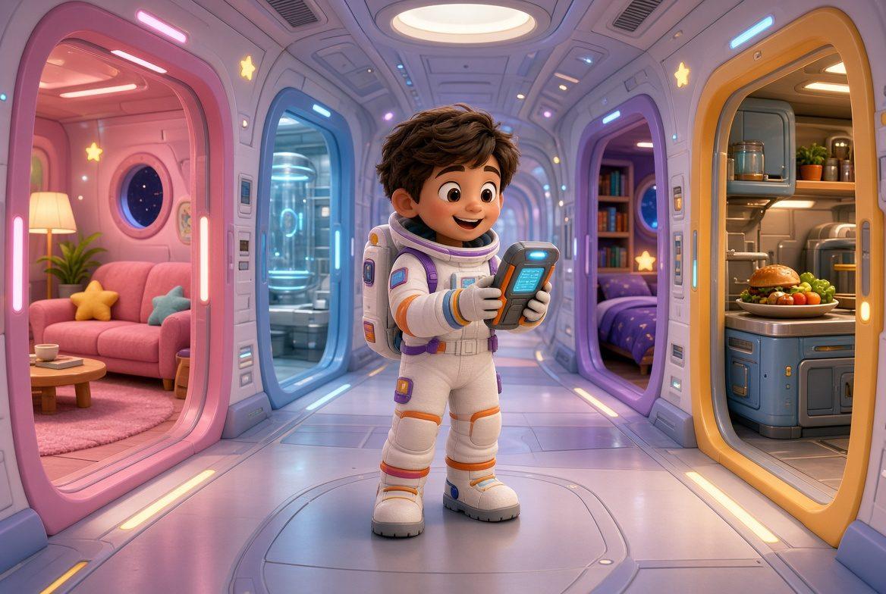

Unit 9 · Lesson 1 · A1 · 7–9 years · rooms and furniture
Для учителя: Spaceship Home
Эта страница не связана с уроком для ученика. Аудио — британский голос браузера (en-GB). По просьбе добавлены игровая тренировка на 9 новых слов и домашняя миссия внутри урока (не отдельная страница). Код классной миссии: SCAN-U9L1-HOME. Код домашней миссии: HOME-U9L1-STAR.

Синяя комната на иллюстрации выглядит как лаборатория с капсулой. В уроке это ванная, а капсула — душ. Это написано в ключе к картинке, чтобы слова bathroom и shower совпали с заданием.
Столовой на фото нет: она «на палубе Deck 2», её ищем отдельной камерой. В задании на мебель стол отнесён в гостиную (кофейный столик виден на картинке), а «робот в холле» заменён на сканер в руках астронавта — так ближе к вашей иллюстрации.
Правило
- There is a … — одна вещь. There are …s — две и больше.
- Предлоги: in (внутри), on (на), next to (рядом).
- This is the kitchen. Комнаты — с the. Вещь в первый раз — с a: a sofa, a shower.
Ключ к картинке
- Розовая дверь — living room (sofa, lamp, table).
- Синяя дверь — bathroom (капсула = shower).
- Сиреневая дверь — bedroom (bookcase, bed).
- Жёлтая дверь — kitchen (food, fridge).
- Холл — астронавт со scanner.
- Dining room — Deck 2, на фото нет.
Ключи · Scanner Cards и Find the Room
9 слов: living room, kitchen, bathroom, bedroom, dining room, hall, sofa, shower, bookcase. Dining room открывается камерой Deck 2.
Ключи · Тренировка слов (3 игры)
Игры стоят в плане до классных миссий. Таймер сам не запускается. Gravity считает только классные миссии; за игры ученик получает звёзды в счёт.
Memory Pairs (8 пар)
Пары «слово ↔ картинка» для: living room, kitchen, bathroom, bedroom, hall, sofa, shower, bookcase (dining room отрабатывается в двух других играх).
Listen and Tap the Door (8)
- living room → Pink door
- kitchen → Yellow door
- bathroom → Blue door
- bedroom → Purple door
- dining room → Deck 2
- hall → The hall
- sofa → Pink door (the sofa is in the living room)
- shower → Blue door (the shower is in the bathroom)
Listen and Spell (8)
Ученик слушает и собирает слово из букв: living room, kitchen, bathroom, bedroom, dining room, hall, sofa, bookcase.
Ключи · Match the Scan
8 пар (без hall): каждое слово к своей картинке.
Ключи · Choose the Word (8)
- It is a shower.
- It is the living room.
- We cook in the kitchen.
- I sleep in the bedroom.
- The books are in the bookcase.
- We eat dinner in the dining room.
- The shower is in the bathroom.
- The astronaut is in the hall.
Ключи · Fix the Ship Log (8)
- There is a pink sofa in the living room.
- There is a shower in the bathroom.
- The books are in the bookcase.
- We cook in the kitchen.
- I sleep in the bedroom.
- We eat dinner in the dining room.
- The astronaut is in the hall.
- The sofa is in the living room.
Ключи · Lock the Furniture (8)
- There is a sofa in the living room.
- There is a lamp in the living room.
- There is a shower in the bathroom.
- There is a bookcase in the bedroom.
- There is a bed in the bedroom.
- There is a table in the living room. (кофейный столик на картинке; в оригинале стол шёл в dining room, которой на фото нет)
- There is a fridge in the kitchen.
- There is a scanner in the hall. (вместо робота, которого на вашей иллюстрации нет)
Ключи · Build the Sentence (6)
- This is the kitchen.
- There is a sofa in the living room.
- There is a shower in the bathroom.
- The bookcase is in the bedroom.
- The kitchen is next to the hall.
- There are four doors in the hall.
Ключи · True or False? (8)
- The sofa is in the living room. — True
- The sofa is blue. — False → The sofa is pink.
- There is a shower in the kitchen. — False → There is a shower in the bathroom.
- The astronaut is in the hall. — True
- There is a bookcase in the bedroom. — True
- The kitchen door is pink. — False → The kitchen door is yellow.
- There is a bed in the bathroom. — False → There is a bed in the bedroom.
- There is food in the kitchen. — True
Radio Report и Captain’s Report
Ученик пишет или говорит сам. Для Radio Report нужно 6 предложений (7–8 — бонус), в каждом есть слово миссии. Примеры: This is the kitchen. / There is a sofa in the living room. / The kitchen is next to the bedroom.
В докладе капитана — 2 комнаты обязательно и 3-я бонус. Нужно выбрать комнату и написать не меньше двух предложений с её названием (This is the … There is a … in the …).
Проверка мягкая. Кнопка «I said it» засчитывает устный ответ ученика.
Финал
Код миссии на экране: SCAN-U9L1-HOME. Ученик выбирает 3 слова, которые запомнил лучше всего. Финал открыт сразу; если задания не закончены, штамп «In progress».
Тайминг из оригинала (для урока 45 мин)
Разминка 7 мин · миссии 1–6 — 24 мин · Radio Report 7 мин · Captain’s Report 5 мин · рефлексия 2 мин. На странице ученика таймер не ставила: в оригинале он запускался сам после «Start mission».
Режим Class (крупный шрифт, «Done orally» для всего этапа) в оригинале был на странице ученика. Я убрала его оттуда; устный зачёт остаётся в Radio Report и Captain’s Report кнопкой «I said it».
Ключи · Домашняя миссия (HOME-U9L1-STAR)
Домашка всегда открыта, форматы другие, чем у классной работы и тренировки. Инструкции на простом английском. Код бонуса виден сразу; штамп «Homework complete», когда готовы все 4 части.
A. My Home (6)
Ученик сам пишет 6 предложений. Мягкая проверка: есть There is / There are / There's и in my / in the / название комнаты. Пример: There is a sofa in my living room. There are two beds in my bedroom.
B. Odd One Out (8)
- sofa, bookcase, shower, banana — banana is not furniture.
- kitchen, bathroom, hall, fridge — fridge is not a room.
- pink, yellow, purple, sofa — sofa is not a door colour.
- bed, bookcase, lamp, kitchen — kitchen is a room, not furniture.
- dining room, living room, bedroom, shower — shower is not a room.
- cook, sleep, eat, sofa — sofa is not an action.
- hall, kitchen, bathroom, apple — apple is not a room.
- There is, There are, This is, bookcase — bookcase is not a sentence starter.
C. Room Riddles (8)
- I have a pink sofa and a lamp. — living room
- We cook here. The door is yellow. — kitchen
- The blue capsule (the shower) is here. — bathroom
- I have a bed and a bookcase. The door is purple. — bedroom
- We eat dinner here. This room is on Deck 2. — dining room
- The astronaut stands here, between the doors. — hall
- I am pink. You can sit on me in the living room. — sofa
- Books are in me. I am in the bedroom. — bookcase
D. Ship Postcard (6)
Текст открытки — про четыре двери, розовую гостиную, синюю ванную, капсулу-душ, сиреневую спальню, жёлтую кухню, еду на кухне и столовую на Deck 2. Подпись: Junior Astronaut.
- How many doors are in the hall? — four / 4
- What colour is the living room door? — pink
- Where is the shower? — bathroom / blue capsule
- Is there food in the kitchen? — yes
- Where do they eat dinner? — dining room / Deck 2
- Who wrote the postcard? — Junior Astronaut
Проверка мягкая: засчитываются синонимы и короткий ответ, если в нём есть нужное слово.
Что исправлено относительно Arena
- Один ключ
tutorcall-spaceship-home-scanner-v1, сохранение при каждом изменении, «↺ Начать заново» с русским подтверждением. - Все главы и задания доступны сразу, без открытия по очереди.
- Ваша иллюстрация — главная картинка, без затемнения и обрезки. Компактная копия стоит над заданиями, где нужна станция или комнаты.
- Весь урок оформлен в стиле иллюстрации: светлый корабль, скруглённые панели, неоновые цвета дверей, звёздочки, шрифты Nunito и Baloo 2.
- Материал для учителя и загрузка фото убраны со страницы ученика сюда.
- Варианты в тестах перемешиваются, проверка идёт по тексту, порядок в Match и Build the Sentence запоминается, сброс перемешивает заново.
- Подписи на точках картинки скрыты, пока точка не просканирована или не найдена.
- После ошибки есть короткое Why. После каждого этапа — кнопка «Дальше».
- Настоящий экран финала со штампом и кодом SCAN-U9L1-HOME.
- Русское вступление с ролью, целью и первым шагом.
- На телефоне кнопка «К финалу» уезжала под водяной знак — кнопки перенесены выше леда и стали компактнее.
- В поиске по картинке нажатие на диван / душ / шкаф теперь засчитывает комнату, если сканер просит комнату; если просит предмет, а нажата комната — подсказка «предмет внутри, нажми на него».
- В «Lock the Furniture» появилось настоящее перетаскивание, не только нажатие.
- Имя астронавта сразу обновляет финал. Сброс останавливает озвучку.
- Проверка ответов устойчива к смешению чисел и строк в памяти.
- Добавлены три игры «Тренировка слов» и домашняя миссия HOME-U9L1-STAR внутри урока, без закрытия по очереди.